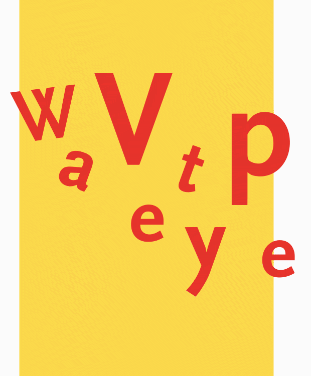

- UX design
- UI design
PlayArte
PlayArte is a gamified experience that allows teenagers to live a personalized visit to the
Prado Museum, interacting both physically and digitally with the artworks
know more
- UX design
- UI design

MNAD
It's an intelligent guide, which through beacon technology offers visitors at the Museo
Nacional de Artes Decorativas de Madrid a personalized experience, in which all the
information offered is contextual, that is, it depends on where they are and what object they
are viewing.
know more

- Accesibility design
- UX design
- UI design
UGO
Master's final project (2019) UGO is a tool that helps people with learning disabilities
be more independent. This tool allows them to navigate inside buildings with the aid of visual
and voice clues
know more
- Graphic design
- Experimental typography
- p5.js

Kinetic type
Final degree project (2018) Wavetype allows any typography to become reactive to
sound.
It explores the possible relation between sound and type and allows anyone to create moving
typographic posters
know more